|
Shaluli Shan fieldwork 2009 Photos from the Bayan Har fieldwork August-September 2006 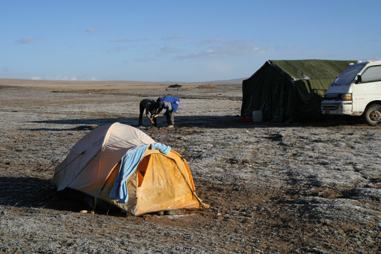 A nice morning in the Galala Valley 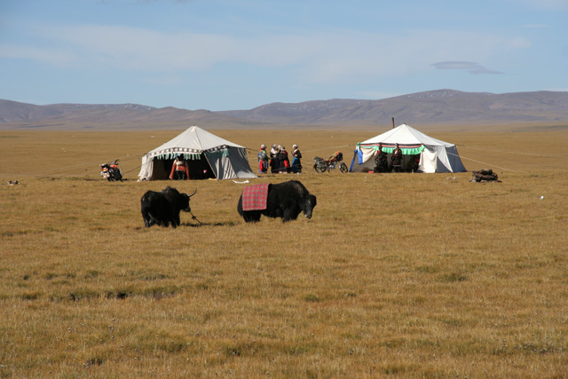 Yaks, tents, people and motorcycles north of Bayan Har 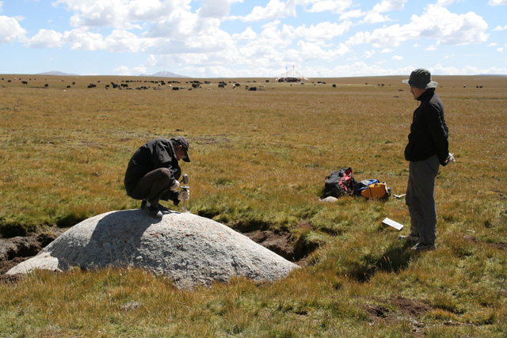 Our driver/cook/Godfather sampling a granite erratic for cosmogenic exposure dating 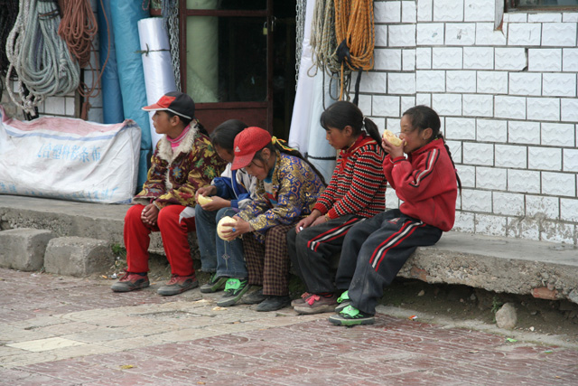 Lunch in Huashixia  Arjen and Clas sampling sand from Chang Jiang for cosmogenic exposure dating 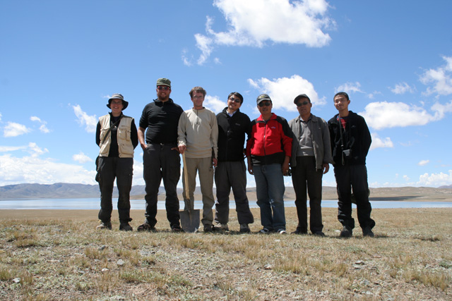 Helena Alexanderson, Martin Machiedo, Jakob Heyman, Dong Jianyi, Wang Shifu, Peng Shifu, Ma Luyi 7 out of totally 10 participants 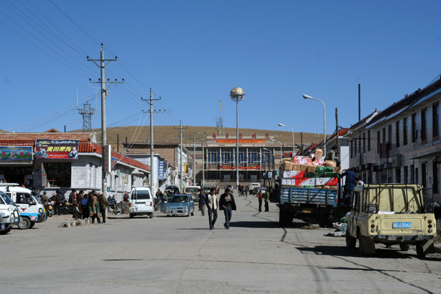 Maduo - the fieldwork basecamp 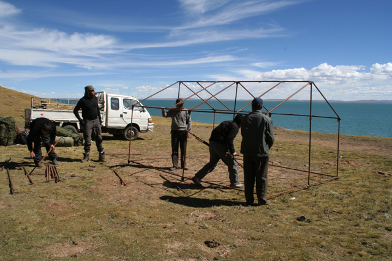 Building our home west of Eling Hu 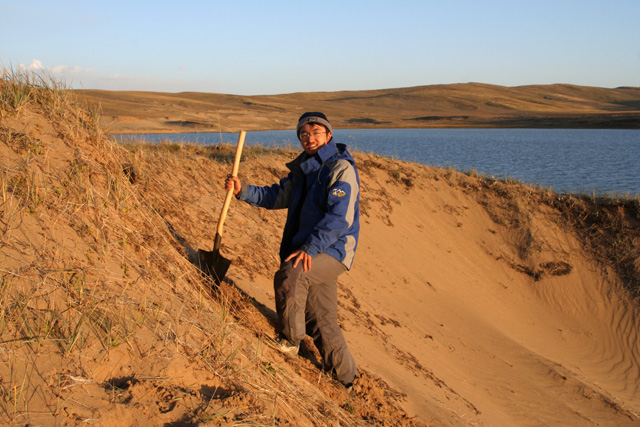 Dong Jianyi - outstanding fieldwork organizer and participant - digging for OSL sampling 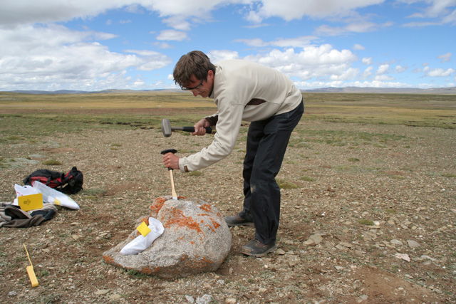 Sampling a granite erratic in the southern part of the Yematan plain 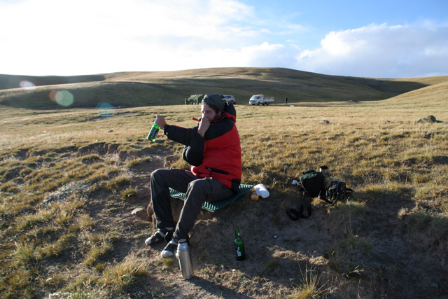 When we did not do research... 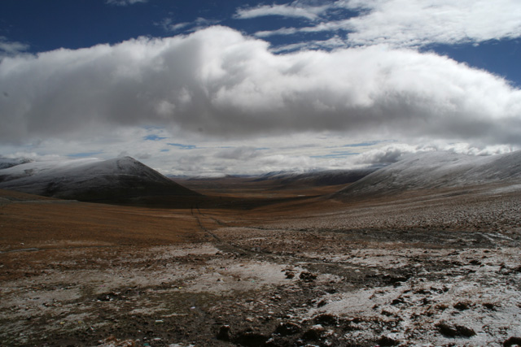 Looking east from the Bayan Har pass |